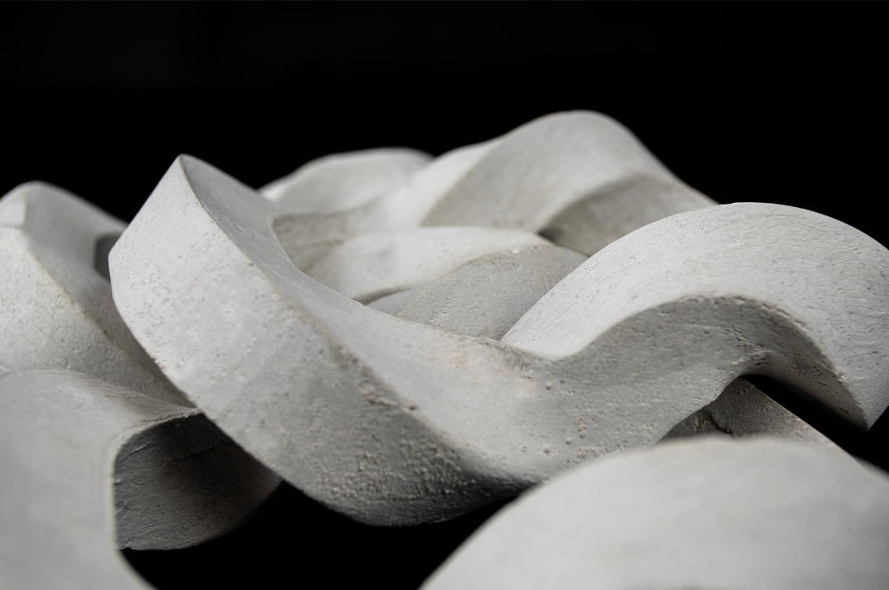
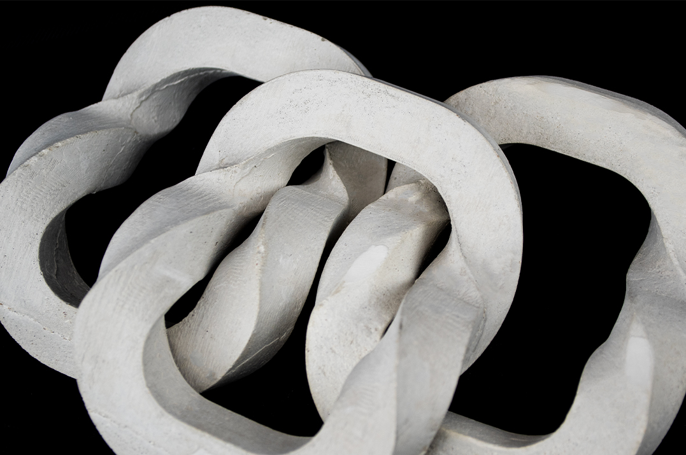
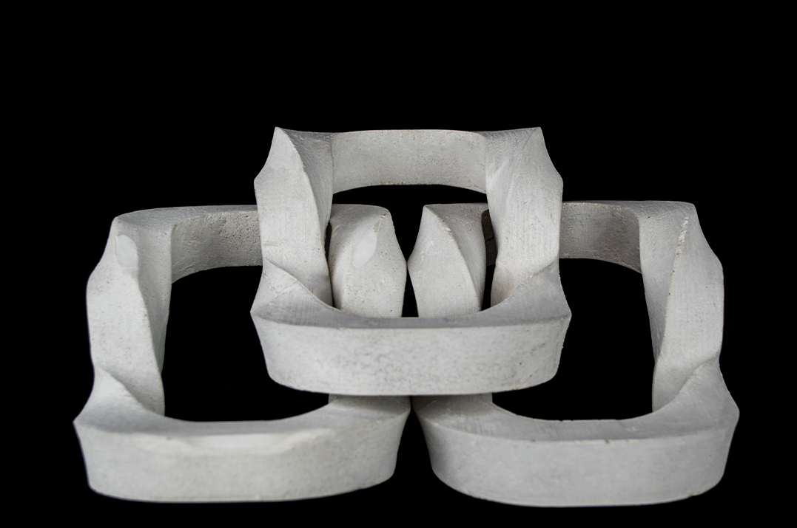
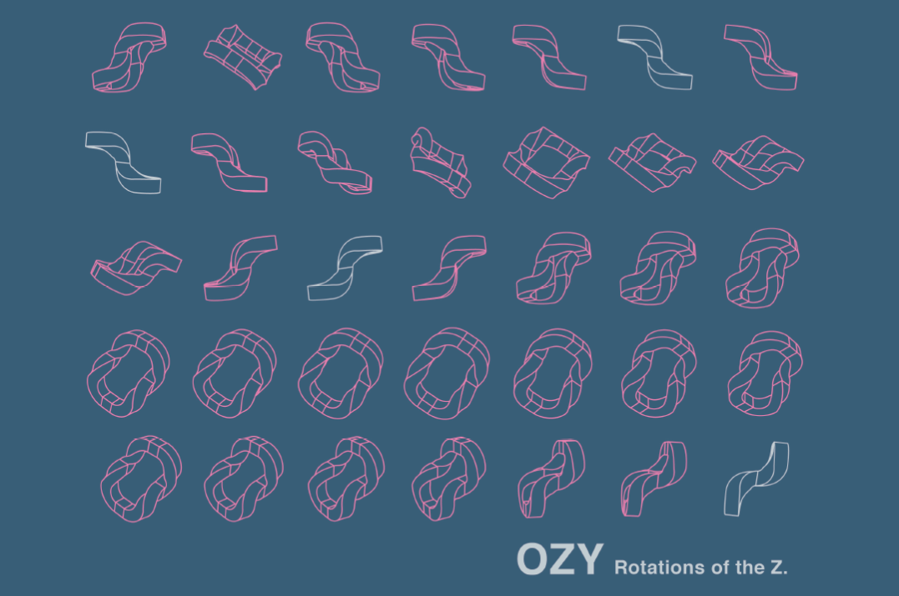
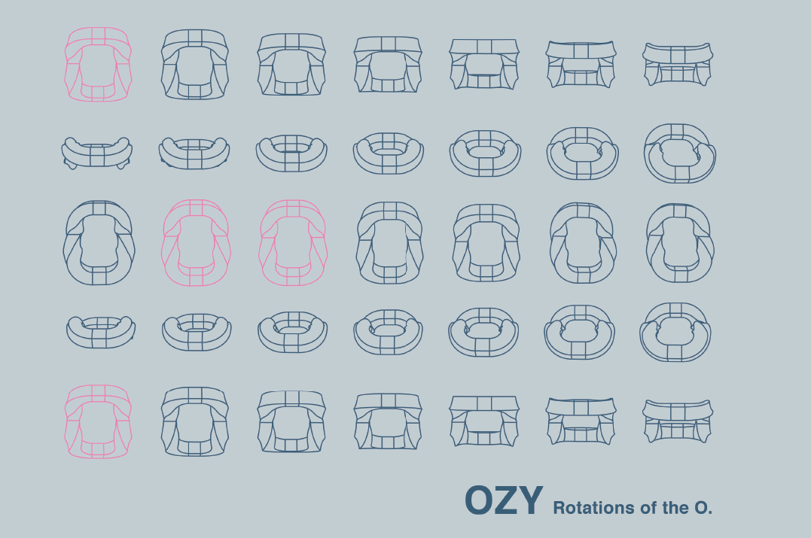
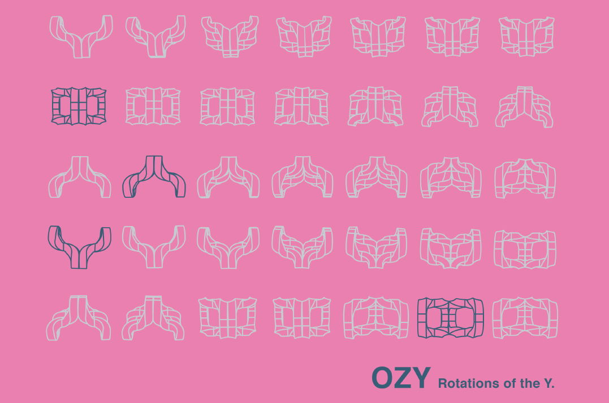
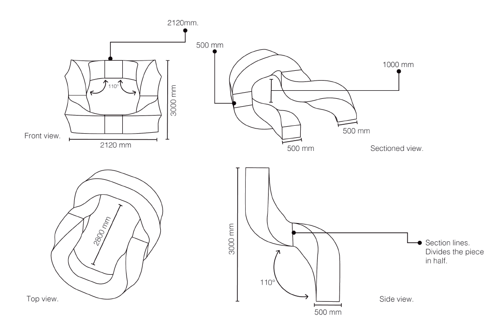
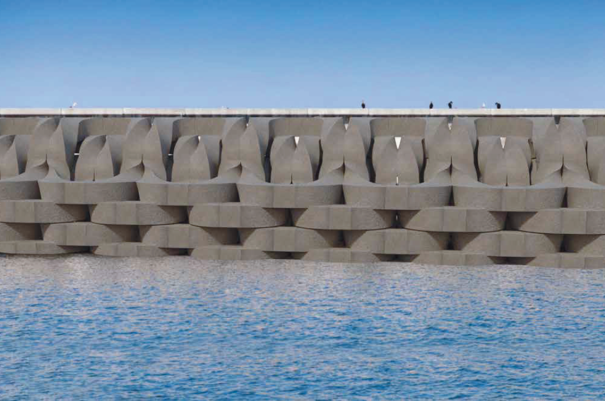
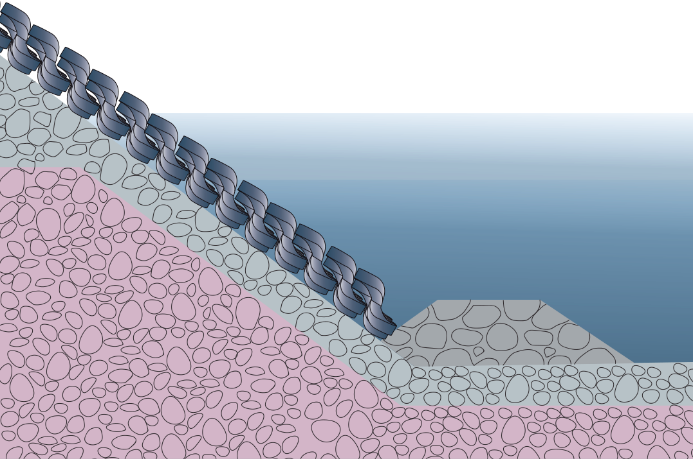

OZY: BREAKWATER
Breakwaters are structures constructed on coasts as part of coastal defense or to protect an anchorage from the effects of both weather and longshore drift. The task was to create one design for a breakwater unit and explore 3-dimensional stacking and tiling.








